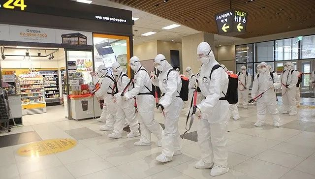
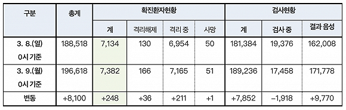
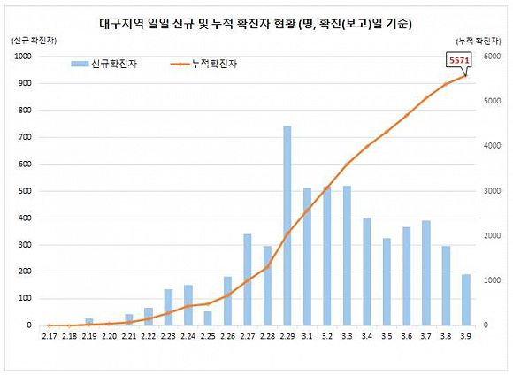

新冠疫情全球燎原
原文链接 备份链接 从1月13日中国境外出现首例新冠肺炎确诊病例，到2月末病毒登陆六个大洲，新冠疫情已经席卷了除南极洲外地球上的所有大洲。 截至3月2日，在中国以外，已有61个国家累计向世卫组织报告了8739例病例，其中已有127例死亡病 …
图片来源：Yonhap
记者：潘金花
“
曾是韩国新冠肺炎疫情最大火焰的大邱庆北地区“新天地”集体感染事态已接近尾声，但零星的集体感染火势仍未减弱。
”
随着对新天地大邱教会信徒的检测工作进入收尾阶段，韩国的单日新增确诊病例数正连日呈现下降趋势，其国内药企也正在加快疫苗与药物研制的步伐。
韩国中央防疫对策本部3月9日通报，截至当天零时，韩国较昨日零时新增248例新冠病毒感染病例，较昨日下午4时新增69例，累计确诊7382例，死亡增至51例，治愈新增36例至166例。
截至目前，除确诊患者外，韩国接受病毒检测的人数累计189236人，24小时新增7852人，有171778人的检测结果呈阴性，其余17458人的结果还未出炉。

来源：韩国中央防疫对策本部
单日新增确诊病例数（以零时为计）继从6日的518例减少到7日的483例后，8日又小幅减少至367例。截至9日零时新增的248例则是2月26日（253例）以来的最低值。
与此同时，大邱的单日新增确诊病例数（以零时为计）增幅也有所放缓，从3日到9日这一周内，分别新增了520例、405例、321例、367例、390例、297例和190例。

韩国全境确诊病例数 来源：韩国中央防疫对策本部
在截至目前累计确诊的7382例病例中，分别有5571例和1107出现在大邱和庆尚北道，占比75.5%和15%。两地平均每10万人中有228.6人和41.6人确诊，其余地区则为0.2至4.8人，韩国全境为14.2人。
在大邱和庆北以外，韩国确诊病例数较高的地区还有京畿道152例、首尔市130例、忠清南道102例、釜山市96例以及庆尚南道83例。截至9日零时，韩国新冠病例死亡率为0.7%，70到79岁为4.1%，80岁以上为6.3%。
据韩联社报道，韩国中央灾难安全对策本部第一次长、保健福祉部长官朴凌厚8日在记者会上表示，政府认为大邱市和庆尚北道感染新冠病毒确诊患者数增速逐步趋于稳定，尚未观察到疫情在全国范围内快速扩散的迹象。
但朴凌厚也指出，由于全国范围内陆续出现确诊患者，要继续做好防疫防控工作，不能掉以轻心。在截至当天零时确诊的7134例病例中，有79.4%与集体感染有关，62.8%与新天地教会相关。目前，大邱市政府对新天地信徒的病毒检测工作已基本完成，正集中对普通市民进行检测。

大邱确诊病例数 来源：韩国中央防疫对策本部
韩国《东亚日报》9日也指出，曾是新冠肺炎疫情最大火焰的大邱庆北地区“新天地”集体感染事态接近了尾声，但以疗养院和公寓等为中心，零星的集体感染火势依然没有减弱，因此掉以轻心还为时尚早。
比如上周末，政府就因为一栋公寓楼有46人确诊而首次采取了封楼措施。据了解，该公寓的142名住户中，有94人是新天地信徒。庆北奉化郡的蓝色疗养院则有51人确诊，包括40名入住者，高龄患者集体感染事件引发担忧。
此外，大邱和釜山还出现了孕妇感染病例，截至目前已有8名孕妇确诊感染。尽管防疫部门表示，胎儿几乎不可能垂直感染，但免疫力低下的孕妇和出生未满3个月的婴儿一旦感染，就很有可能是重症病例。
目前，韩国的药企正在争分夺秒与病毒“赛跑”。韩国制药生物协会9日表示，国内有15家生物制药企业已开始或正准备研制新冠病毒疫苗和药物制剂。
其中，韩国GC绿十字和SK生物科技等5家药企宣布开始研发疫苗，赛尔群等10家药企也已着手或准备研发相关药物，手段包括分析治愈者血液、研究抗流感药物效果等。
国立保健研究院、科学技术信息通信部、韩国化学研究院、韩国生命工学研究院4家机构也为研发新冠疫苗和药物正在积极推进政府和民间合作。
不过，预计完成研发和临床试验至少还需要数月甚至数年。韩国制药生物协会会长元喜睦表示，将基于政府支持的生物药企研发力量克服危机。但也有专家认为，由于大多数药企仍处于研发初期阶段且未进入临床试验，预计最早也要到年底才能实现临床应用，因而不宜对此盲目期待。
据韩国外交部9日消息，截至当天上午9时，对韩国采取入境管制措施的国家和地区已增至106个。从9日零时起，韩日两国也暂停了对方公民的免签证入境政策，韩联社预计贸易和人员往来等双边交流或将遭受重创，使双边关系进一步恶化。

原文链接 备份链接 从1月13日中国境外出现首例新冠肺炎确诊病例，到2月末病毒登陆六个大洲，新冠疫情已经席卷了除南极洲外地球上的所有大洲。 截至3月2日，在中国以外，已有61个国家累计向世卫组织报告了8739例病例，其中已有127例死亡病 …
原文链接 备份链接 韩国青瓦台。图片来源：维基百科 记者 ：肖恩 “ 韩国已累计确诊204新冠肺炎病例，是海外病例第二多的国家，仅次于邻国日本。 ” 在教会和军队相继出现新型冠状病毒肺炎感染病例后，十几名来自韩国总统府青瓦台的警卫也因为曾 …
原文链接 备份链接 3月4日，大韩航空一架飞机正在消毒。图片来源：Yonhap “ 这将是韩国首次从特定国家、而不仅是国外个别地区撤侨。目前居留在伊朗的韩国公民共220人，预计约有100人将乘包机回国。 ” 韩国中央防疫对策本部3月8日通 …
原文链接 备份链接 图片来源：Yonhap “ 政府有权禁止卫生口罩、洗手液、防护装备出口或运往国外，违者将处以5年以下有期徒刑或约合人民币29万元以下的罚款。 ” 韩国中央防疫对策本部3月6日通报，截至当天零时，韩国较昨日零时新增518 …
原文链接 备份链接 图片来源：Yonhap “ 新天地教会周四已再次致歉，对于教会内出现多例确诊病例深感愧疚。 ” 韩国疾病管理本部3月5日通报，当天0时至下午4时，韩国新增322例新冠病毒感染病例，累计确诊6088例，死亡增至40例，治 …